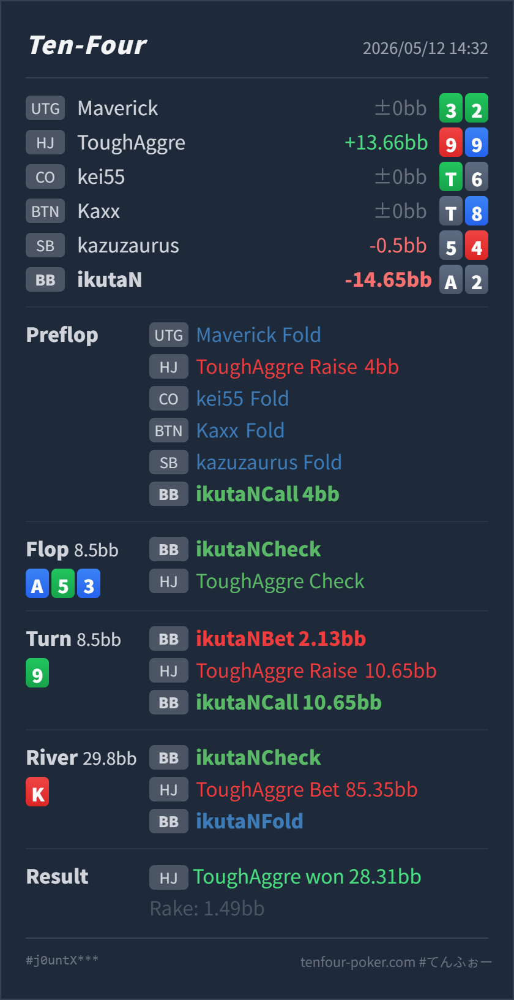

Preflop
境界A♠2♠ はsuited wheel Aで、blockerとstraight/flushの実現価値があります。ただしopen sizeが大きいため、余裕のあるdefendではありません。
GTO基準ではpreflop callは境界寄りのdefend候補です。flop checkは自然で、turnの小betは成立しますが、raiseを受けた時点ではfoldが標準寄りです。
A♠ 2♠9♥ 9♦A♦ 5♣ 3♦ 9♣ K♥A♠2♠ を守ったあと、flop check throughからturn 9♣ で小betし、raiseにcallしてよいか。A♠ A♦ 9♣ 5♣ 3♦ のone pairです。4でwheel straightになりますが、現状はtop pair weak kickerで、raiseに強く耐えるhandではありません。A♠ 2♠9♥ 9♦4BB, CO fold, BTN fold, SB fold, BB Hero call 4BBA♦ 5♣ 3♦ 9♣ K♥8.5BB, BB Hero check, HJ Villain check8.5BB, BB Hero bet 2.13BB, HJ Villain raise 10.65BB, BB Hero call29.8BB, BB Hero check, HJ Villain bet 85.35BB, BB Hero fold28.31BB, rake 1.49BB
境界A♠2♠ はsuited wheel Aで、blockerとstraight/flushの実現価値があります。ただしopen sizeが大きいため、余裕のあるdefendではありません。
A♦ 5♣ 3♦良い
Heroはtop pair weak kicker + wheel gutshotです。
9♣betは可、callは悪い
Heroはone pairで、4だけが大きな改善です。9はHJの99や一部のA9を強化します。
K♥良い
HeroはAのone pairのままで、turn raiseをcallしたレンジ内でもかなり下側です。
| 論点 | その場で置いた見立て | どこがズレやすいか | 次回の基準 |
|---|---|---|---|
| preflop defend | suited wheel Aなので守れそう | A2s は守り候補ですが、HJの 4BB openは大きく、2BB open相手ほど広く守れません。 | 大きめHJ openにはsuited wheel Aを境界扱いにし、offsuit Axは大きく削る |
| turn bet | flopがcheckで回ったのでAが勝っていそう | bet自体は自然ですが、Heroはkickerが弱く、強いAx・set・two pairに対して脆いです。 | 小さく打つならvalue/protectionのbet/foldにする |
| turn raise対応 | gutshotもあるのでcallできそう | 必要勝率は約29%ですが、相手のraiseは99/55/33/A9/A5/A3や強いAxに寄りやすく、4以外の改善が薄いです。 | weak top pair + gutshotは、turn raiseに原則fold |
| ストリート | その時点の見え方 | 実ハンドの位置づけ | 評価 | その場の一手 |
|---|---|---|---|---|
| Preflop | HJが 4BB と大きめにopenし、BBまでfoldで回った場面です。 | A♠2♠ はsuited wheel Aで、blockerとstraight/flushの実現価値があります。ただしopen sizeが大きいため、余裕のあるdefendではありません。 | 境界 | callは候補に入ります。2BB open相手ほど広く守らず、A2o ならかなりfold寄りにします。 |
Flop A♦ 5♣ 3♦ | HJは強いAxを多く持ちますが、check backによりレンジは少し弱まります。BBはA5/A3/55/33/42sなどの強いhandもあります。 | Heroはtop pair weak kicker + wheel gutshotです。 | 良い | OOPなのでcheckで問題ありません。HJ check back後も、まだ強いvalue handではありません。 |
Turn 9♣ | HJのflop check back後なので、BBから小さく打ってKK-QQや5x、diamond drawに圧をかける発想はあります。 | Heroはone pairで、4だけが大きな改善です。9はHJの99や一部のA9を強化します。 | betは可、callは悪い | 2.13BB の小betはありです。ただしraiseされたらfoldが標準です。callは必要勝率に対して実現しにくく、riverでさらに苦しくなります。 |
River K♥ | turn raise call後に、HJがpotの約2.9倍をbetしています。 | HeroはAのone pairのままで、turn raiseをcallしたレンジ内でもかなり下側です。 | 良い | foldで良いです。ここでcallする必要はありません。 |
A2s なので、A2o と違ってdefend候補に残せます。ただしHJの 4BB openは大きいので、境界handとして扱います。9♥9♦ でturn setでした。これは結果論ではありますが、HJのturn raiseは実際にもかなりvalue寄りでした。